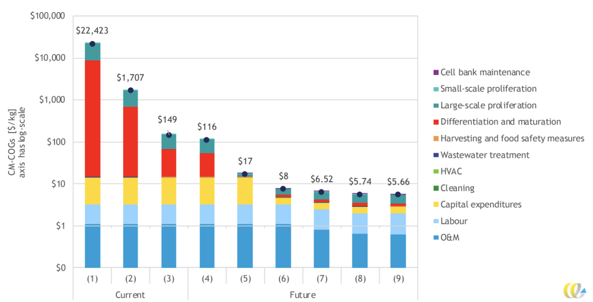

Cellular agriculture reaches mainstream costs
Cellular agriculture, the process of producing real animal products without any animals whatsoever, will enter the market in the 2020s. To become mainstream, researchers and engineers will need to reduce costs dramatically. Techno-economic analysis by CE Delft suggests that cellular agriculture production costs could approach $5/kg of animal product in the 2030s, bringing it within range of high-priced cuts of meat.
Production cost of cultivated meat. Source: CE Delft / Good Food Institute
These cost reductions could make cellular agriculture an accepted option for meat, and set the stage for even further cost declines and broader adoption in the 2030s and 2040s.